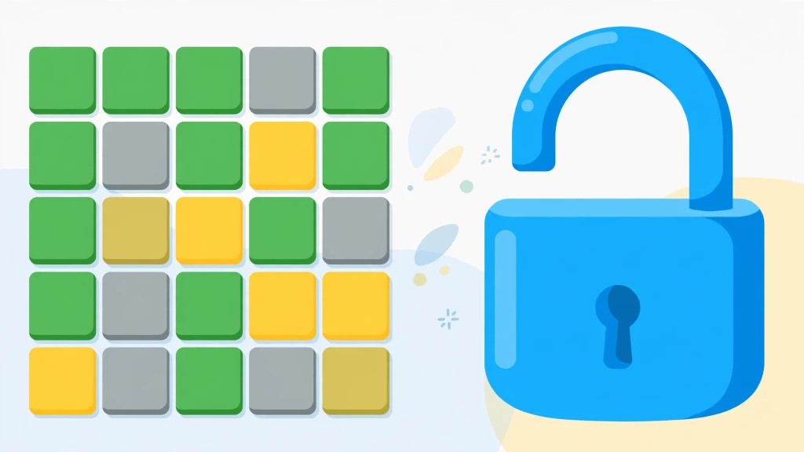

Wordle Unlimited Unblocked: Play at School & Work (2026 Guide)

Looking for Wordle Unlimited unblocked? You are in the right place. This guide explains exactly how to play unlimited Wordle puzzles on school Chromebooks, restricted school Wi-Fi, and locked-down work networks — with no downloads, no VPN, no signup, and no fees.
Most so-called "unblocked games" sites are slow, covered in ads, or get blocked again within weeks. Here you will learn what "unblocked" actually means, why this version of Wordle Unlimited passes through school filters while other game sites don't, and how to start playing in under thirty seconds.
What Does "Unblocked" Actually Mean?
An "unblocked" game is simply a game hosted on a page that school and workplace content filters do not block. There is no special technology involved and nothing shady going on. Filters work from blocklists of known gaming domains, and they also flag pages that load dozens of third-party advertising and tracking scripts.
Wordle Unlimited unblocked means you can open the game in a normal browser tab on a restricted network and play instantly. You get the same endless five-letter puzzles, the same six guesses per round, the same green-yellow-gray tile feedback — and zero waiting between rounds. The only difference is that the page loads where other game sites refuse to.
It is worth clearing up a common misconception: "unblocked" does not mean "hacked" or "pirated." It just means the site is clean enough that filters leave it alone. That distinction matters, because it is also the reason this version keeps working while ad-stuffed mirror sites keep getting blocked.
Why Do Schools and Workplaces Block Game Sites?
Schools block game sites for three practical reasons, and understanding them explains why most unblocked mirrors fail:
- Bandwidth: A single heavy game portal with auto-playing video ads can eat more bandwidth than an entire classroom of students doing research. IT departments block these domains to keep the network usable for actual schoolwork.
- Distraction: A school's job is easier when the most addictive corners of the internet are fenced off during class hours.
- Security: Shady free-game portals are among the most common sources of malware on school networks. They bundle malicious ads, fake download buttons, and drive-by scripts alongside the games. When IT sees a domain serving that kind of content, the whole domain gets blocked — including any legitimate games hosted there.
This is why so many "unblocked" mirrors stop working after a few weeks. They are ad-heavy pages on already-flagged domains, or they get added to blocklists as soon as students start sharing them. A clean, lightweight page on a non-flagged domain is what actually survives long-term. Keep that in mind as the test every unblocked claim should pass: if the page is full of pop-ups and download buttons, it will be blocked soon, and it might not be safe.
Why Wordle Unlimited Works Where Other Games Don't
This version of Wordle Unlimited was built to be filter-friendly from the ground up. Here is the full breakdown of why it loads on networks that block nearly everything else:
- No downloads or plugins: The entire game is plain HTML, CSS, and JavaScript running inside the browser tab. There is nothing to install, which means there is nothing for an administrator's software policy to forbid.
- No ad servers or trackers: This is the big one. Most school filters flag pages based on their third-party requests — the dozens of calls a typical game page makes to ad networks, analytics beacons, and data brokers. This game makes none of those calls. No ads, no tracking pixels, no external scripts phoning home. To a content filter, the page looks about as suspicious as a Wikipedia article.
- Tiny page size: The whole page is a fraction of the size of a typical game portal. It loads in about a second even on congested school Wi-Fi during peak hours, and it doesn't stutter on low-power hardware.
- 100% client-side: Your puzzles, win streaks, statistics, and settings are saved in your own browser's local storage. Nothing is uploaded to any server, which means there is no account system to block and no data leaving the school network.
- Touch friendly: The on-screen keyboard means the game plays perfectly on touchscreen Chromebooks and tablets, which is what most schools actually issue to students.
In short, there is nothing here for a content filter to object to. It is a vocabulary puzzle, not a game portal. That is the entire secret, and it is why this page keeps working semester after semester while mirror sites come and go.
How to Play Wordle Unlimited on a School Chromebook
Getting started takes less than thirty seconds:
- Open Chrome and navigate to the Wordle Unlimited homepage. Bookmark it — one tap beats searching every time, and bookmarks sync across school devices logged into the same account.
- Type any valid five-letter English word and press Enter, or tap the letters on the on-screen keyboard.
- Read the tile colors after each guess. Green means the right letter in the right spot — lock it in. Yellow means the right letter in the wrong spot — move it. Gray means the letter is not in the word at all — never use it again.
- You have six guesses to find the word. Win the round (or run out of tries) and hit "Next Game" for a brand-new word instantly. There is no daily limit and no waiting until midnight.
If you have never played Wordle before, read the full step-by-step rules walkthrough first — it covers tile mechanics, keyboard controls, Hard Mode, and the custom challenge link generator with visual examples.
Practical Tip for School Devices: Because your stats are stored in the browser's local storage, a school Chromebook that wipes profiles on logout will reset your streak. If keeping a long streak matters to you, play on a personal device when you can, or just enjoy the puzzles without worrying about the numbers.
5 Tips for Winning on Short Breaks
School breaks are short — five to fifteen minutes between classes. Here is how to get the most out of a quick session:
1. Open with a Vowel-Heavy Word
Starting with ADIEU or AUDIO tests four vowels at once and extracts maximum information from your very first guess. The math behind every popular opener is broken down in our best starting words guide — ROATE, SLATE, and CRANE are the strongest algorithmic alternatives if you prefer consonant-heavy openers.
2. Trust the Keyboard, Not Memory
The virtual keyboard grays out eliminated letters automatically. Glance at it before every guess from turn three onward. Most lost streaks come from accidentally reusing a gray letter under time pressure, not from hard words.
3. Watch for Double Letters Early
Words like APPLE, SWEET, and ROBOT trip up fast players who assume every letter is unique. If your vowels check out but consonants aren't landing, test a repeat before your guesses run out. Our vowel strategy guide explains exactly how duplicate-letter feedback works.
4. Turn Hard Mode Off Under Time Limits
Hard Mode forces you to reuse every revealed clue, which is great for discipline but deadly when the clock is ticking and you hit a rhyme trap like _IGHT or _ATCH. Play normal mode between classes and save Hard Mode for when you have time to think. Our Hard Mode guide covers trap survival in detail.
5. Use the Hint button without shame: If you're stuck on guess five with ninety seconds until the bell, tapping the 💡 hint button to reveal one correct letter beats losing the streak. That is literally what it is there for.
For Teachers: Turning It Into a Classroom Tool
Wordle Unlimited works surprisingly well as a teaching instrument, and that is not just marketing copy. Consider the properties: it is a pure English vocabulary puzzle with no chat, no ads, no accounts, no in-app purchases, and no inappropriate content. That combination makes it one of the very few games school IT departments tolerate — sometimes even encourage.
Practical classroom uses that teachers report: five-minute spelling warm-ups at the start of English class, prefix and suffix pattern practice (words like REACT, UNTIE, and DAILY make morphology tangible), and quick critical-thinking exercises where students must explain their deduction process out loud. The game naturally teaches information theory — every guess is a question asked of the word list — without anyone needing to know the technical term.
The built-in custom word link generator is the killer feature for classrooms. A teacher can set a specific vocabulary word, generate a challenge link, and have the entire class solve the same puzzle. It works as a quiz, a competition, or a calm five-minute starter activity. Because links are encoded client-side, students can't peek at the answer by inspecting the URL.
If you are a teacher reading this: bookmark the page on classroom devices, and you have a zero-prep activity that works every single day.
Wordle Unlimited Unblocked vs. Other Unblocked Game Sites
Not all unblocked options are equal. Here is an honest comparison of the landscape:
- Ad-heavy unblocked portals: (the ones ranking with "76" or "66" in their names) host hundreds of games wrapped in aggressive advertising. They work until they don't — filters catch up with them, the ads slow old Chromebooks to a crawl, and some serve outright malicious pop-ups. Fine as a last resort, bad as a daily habit.
- GitHub-hosted clones: are clean and usually unblocked, but they are bare-bones: no stats, no hard mode, no hint button, often broken on mobile. They are built by hobbyists, not maintained.
- This version sits in the middle: the full game with stats, streaks, hard mode, hints, and custom challenge links, on a clean page with zero ads and zero trackers. It is the option you bookmark.
The practical advice: bookmark one clean source and stop searching. Every search for "unblocked games" is another chance to land on a sketchy mirror. Pick the clean page once, and you're done.
Frequently Asked Questions (FAQ)
Is Wordle Unlimited unblocked at school?
Do I need a VPN to play Wordle Unlimited unblocked?
Is it safe and appropriate for school?
Does Wordle Unlimited work on a school Chromebook?
Is Wordle Unlimited unblocked really free?
Can I play Wordle Unlimited unblocked at work?
Why do some unblocked Wordle sites stop working?
Related Strategy Guides & Resources
Start Playing Wordle Unlimited Unblocked Now
No downloads, no signup, no daily waiting. Play infinite 5-letter puzzles instantly.
Play Wordle Unlimited Free 🎮